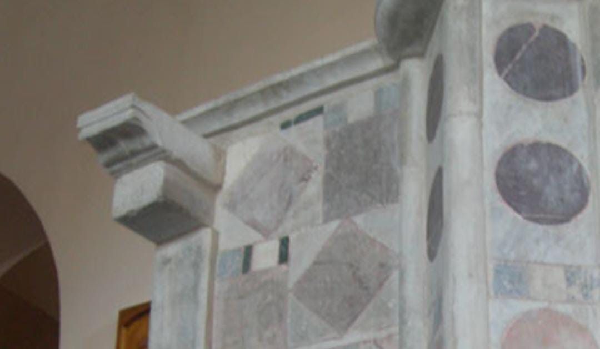
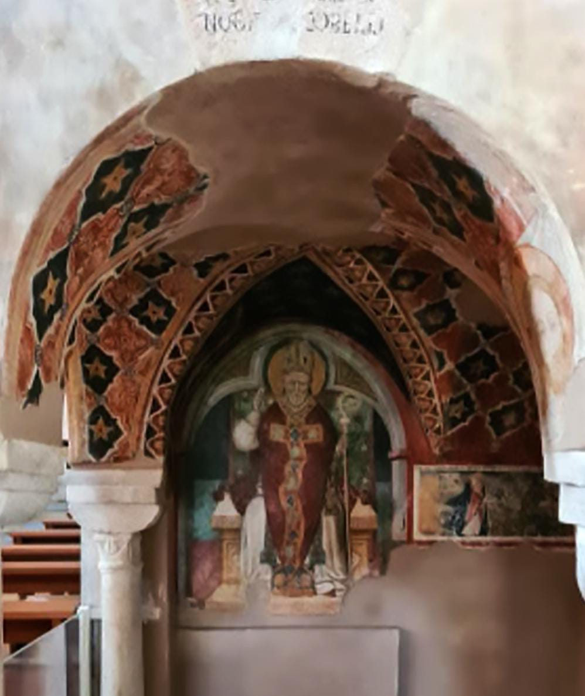
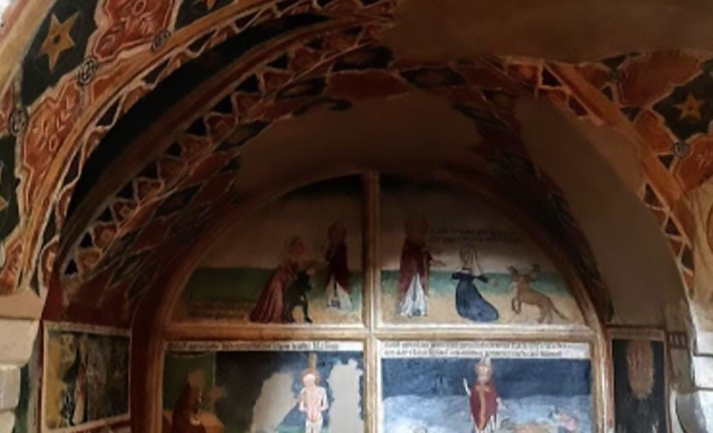

A metà della navata centrale si staglia questo prezioso pulpito marmoreo.
Il pulpito è uno degli elementi distintivi delle Chiese Cattedrali, eretto e decorato come segno di prestigio e munificenza per concedere grande dignità al luogo dal quale si proclamava la Parola di Dio durante le celebrazioni.
Questo Pulpito è risalente al XIV sec. e le sue decorazioni policrome sono realizzate con materiali provenienti dall’Antica città di Paestum: sui frontoni laterali è possibile scorgere alcune parole in latino e in greco, testimonianza della duplice liturgia che veniva qui celebrata (rito romano e rito orientale), invece, sulle soglie esterne della balaustra, più in alto, sono visibili i segni del violento incendio del 1918;  inoltre, nel vano sottostante, avvolto da due archi a tutto sesto, scampato all’incendio grazie alla sua posizione nascosta, vi sono un ciclo di affreschi sulla vita di San Biagio;
infine, la piccola volta a crociera è affrescata con motivi arabeschi, lascito dell’antica presenza religiosa orientale (Basiliana).
